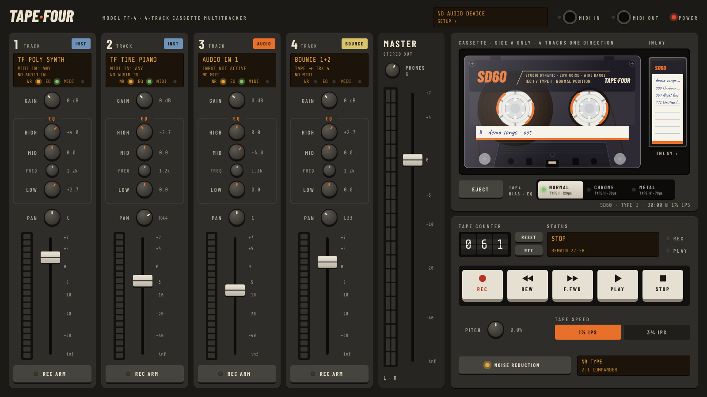
TAPE·FOUR is a four-track cassette recorder that runs on your computer. It records onto a virtual cassette, works with any audio interface your computer has, on Windows, macOS or Linux, and plays VST3 instruments (and Audio Units on a Mac) as if they were plugged into the deck.
It is deliberately not a DAW. Everything about it follows the workflow of a portable cassette multitracker:
Open the repository's Actions tab on GitHub, pick the latest green Build run, and download the one for your computer. Nothing needs installing. The version number (0.2.build) is in the window's title bar.
| Computer | Download | Then |
|---|---|---|
| Windows, 64-bit | TapeFour-windows-x64 | Unzip and run TapeFour.exe. Windows may warn that it comes from an unknown publisher, because it isn't code-signed: choose More info → Run anyway. |
| Mac, Apple silicon or Intel, macOS 11 or later | TapeFour-macos-universal | Unzip and move TapeFour.app to Applications. It isn't notarised, so the first time, right-click it and choose Open. Allow microphone access when asked: macOS asks this for any program that records from an audio input. |
| Linux, 64-bit | TapeFour-linux-x64 | Extract the archive and run TapeFour. It uses ALSA, which every distribution has, and JACK when a JACK server is running. |
Click the amber display at the top right of the deck (SETUP ›) to open Setup, then go to the Audio tab.
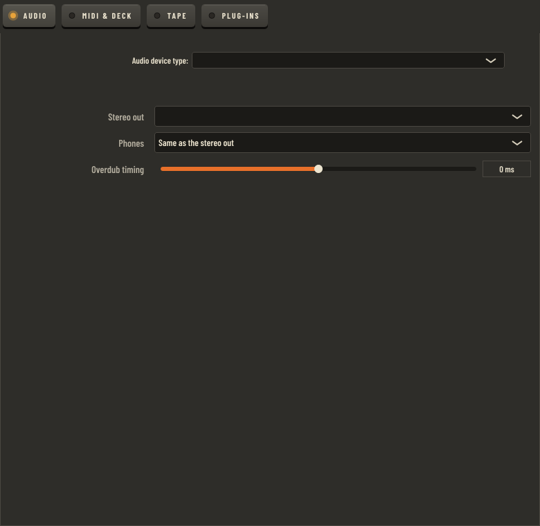
| Setting | What it does | What to expect |
|---|---|---|
| Audio device type, device | Chooses the audio system (see the table below) and the interface. | The setup display on the deck shows the system, sample rate, buffer size and round-trip latency. The first time you start, TapeFour opens the computer's usual device; on Windows it picks an ASIO driver if one is installed. |
| Sample rate, buffer | The interface's sample rate and block size. | A smaller buffer gives lower latency when you play live, but uses more CPU. 128 samples at 48 kHz is a good starting point. |
| Stereo out | The output pair the mix goes to. | The master fader controls this pair. |
| Phones | A second output pair, or the same as the stereo out. | The Phones knob on the master strip sets its level, separately from the master fader. |
| Overdub timing | ±50 ms trim on top of the latency the driver reports. | Use it if parts recorded through the interface (audio inputs and hardware synths) land slightly early or late against what is already on tape. Positive values move recordings earlier. Instruments and bounces don't go through the interface, so they aren't affected. |
| Audio system | On | What to expect |
|---|---|---|
| ASIO | Windows | Your interface's own driver: the lowest latency. The best choice for overdubbing. |
| Windows Audio (WASAPI) | Windows | Works with any device, including the computer's own sound. Exclusive Mode and Low Latency Mode bring the latency down. |
| DirectSound | Windows | The oldest and slowest. For a device nothing else will open. |
| CoreAudio | macOS | Every Mac interface. To use two interfaces at once, combine them into an aggregate device in Audio MIDI Setup. |
| ALSA | Linux | Straight to the hardware. A hw: device gives the lowest latency, but no other program can use the interface at the same time. |
| JACK | Linux | Listed when a JACK server (or PipeWire's JACK support) is running. TapeFour shares the interface with other programs. |
Whatever the system, recordings line up with what you heard while playing: TapeFour shifts each recording by the interface's reported latency. Parts played through the interface are shifted by the round trip (input and output); instruments only by the output, since they're made inside the computer; bounces not at all, since they come straight off the tape.
Every change is saved straight away. If the saved driver can't be opened at start-up (for example, because another program is using it), the deck tells you, and keeps your choice for next time.
In Setup → MIDI & Deck, tick the controllers you want to use and the MIDI outputs your hardware synths are on. Chapter 13 covers this in full.
In Setup → Instruments, choose Options… → Scan for new or updated VST3 plug-ins. Instruments found here appear on each track's patch card. Each plug-in is scanned in a separate helper copy of TAPE·FOUR, so a plug-in that crashes or hangs while being scanned can't take the program down: it is set aside and the scan carries on. TAPE·FOUR also has two built-in instruments, TF Poly Synth and TF Tine Piano, so you can start without any plug-ins.
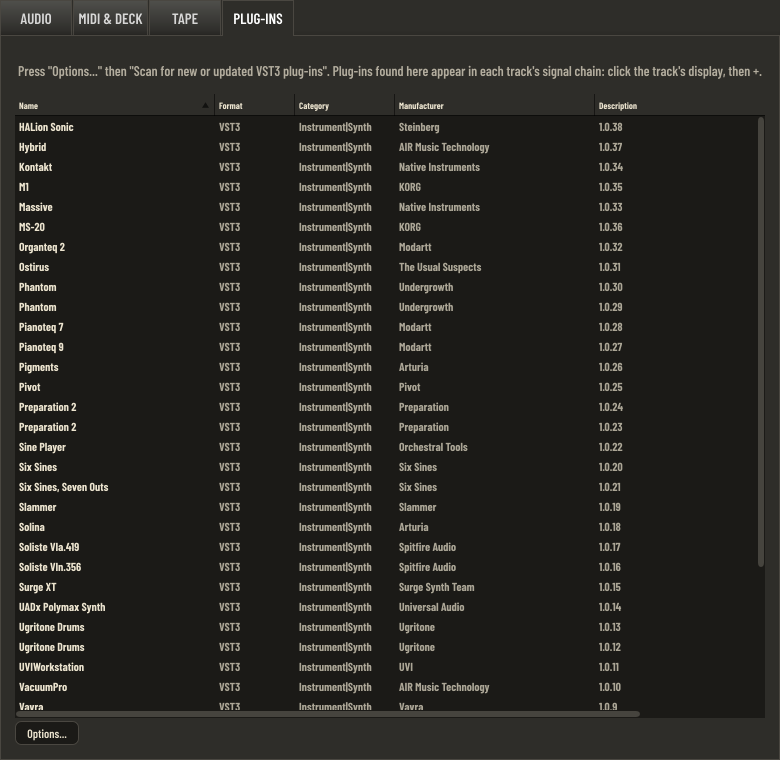
The deck is laid out like a portastudio: the mixer runs the full height on the left, and the tape section is a column on the right, with the cassette at the top and the transport below it. The window can be resized; the deck keeps its 16:9 shape.
With the tape stopped, press EJECT. The menu's top half inserts a new blank tape: first choose the cassette (BASIC, SD, XR or MX), then the length. The bottom half, the tape shelf, lists every tape you have made. The tape that's in the deck is ticked.
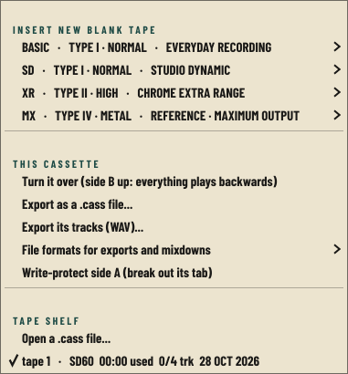
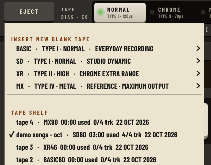
| Length | Per side | At 1⅞ ips | At 3¾ ips | Spools |
|---|---|---|---|---|
| C-46 | 23 min | 23:00 | 11:30 | Smallest packs |
| C-60 | 30 min | 30:00 | 15:00 | Medium |
| C-90 | 45 min | 45:00 | 22:30 | Largest packs |
Like a real 4-track, TAPE·FOUR uses one side only, with all four tracks running the same way. When the tape reaches the end, the transport stops and the status display shows END OF TAPE.
You never need to save. A tape is written to disk once it has been stopped for a second, and again whenever you change it. It is also saved when you eject it and when you quit. The deck remembers which tape was in when you quit and loads it next time.
Double-click the label on the cassette to write on it. Click the inlay beside the cassette to take the J-card out of its case and write on it: the title, up to eight songs with their counter numbers, a note for each track, whether you recorded with NR, the speed, and the date. Click outside the card, press Esc or click X to put it back. The title on the inlay and the label on the cassette are the same text, so changing one changes the other.
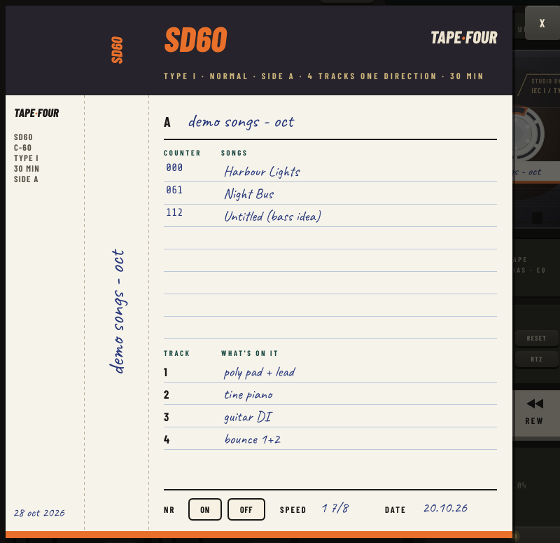
Each cassette in TAPE·FOUR behaves like a real tape. Its headroom, treble limit, hiss, grain and output level come from published lab measurements of a real cassette of that kind.
The figures are in dB relative to Dolby level, the tape's reference level. On TAPE·FOUR that is 0 VU on the meters, or −12 dBFS. All figures are at 1⅞ ips without noise reduction.
| Term | Meaning | What you hear |
|---|---|---|
| MOL 400 Hz | Maximum output level: where a 400 Hz tone reaches 3% distortion. | How loud you can record before the tape thickens and then distorts. Bass gets a little less room than the mids, as on real tape. |
| SOL 10 kHz | Saturation output level for treble. | How loud cymbals, hi-hats and bright synths can go before the tape squashes them. Treble saturates long before the mids, especially at 1⅞ ips. |
| S/N | Hiss on blank tape, A-weighted, below Dolby level. | The hiss in quiet passages. |
| Mod. noise | Modulation noise: grain that rides on the signal. | A fine roughness on sustained notes. It gets louder and quieter with the music, so noise reduction can't remove it. |
| Sensitivity | How loud the tape plays back what you recorded. | A small level shift on every pass through the tape. You notice it after several bounces. |
| EQ | The playback EQ time constant: 120 µs or 70 µs. | 70 µs tapes have less treble hiss. |
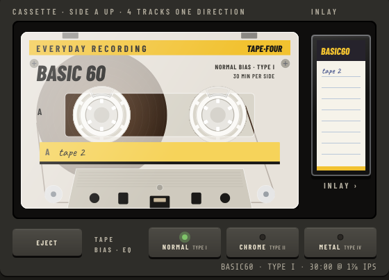
A budget ferric tape, the kind that came in multipacks. It has the least headroom and the most hiss and grain of the four. It sounds warm and slightly fuzzy, and compresses early if you record hot. It's good for sketches, lo-fi textures and anything you want to sound like an old demo.
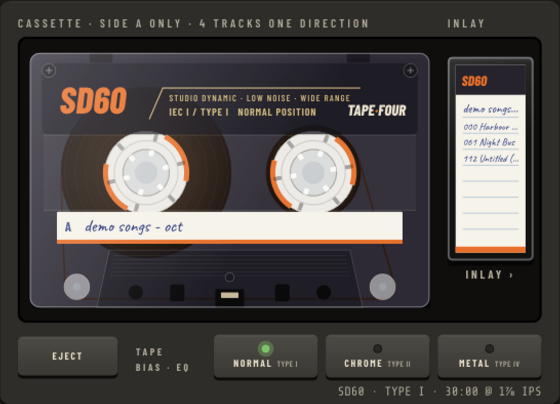
A premium ferric tape and the all-rounder. It has good mid-range headroom, the best treble headroom of the Type I tapes, and moderate hiss. Tapes made before tape types existed play as SD. It's the tape to reach for when you don't have a reason to pick another.
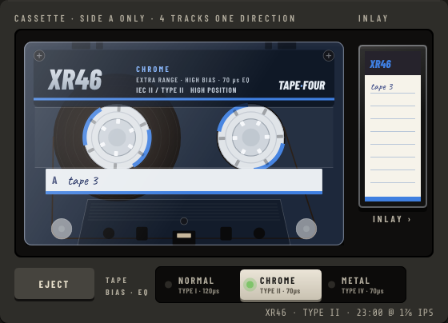
A chrome-position tape. Its 70 µs playback EQ makes the hiss quieter and less bright, and it plays back slightly hot. It has the least treble headroom of the four, so loud bright sounds dull and compress first, especially at 1⅞ ips. It's clean and quiet for vocals, acoustic instruments and pads. For bright, loud material, use 3¾ ips or MX.
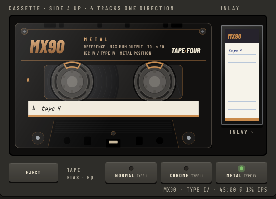
A metal tape. It has the most headroom everywhere (about 3 dB more mid-range and 1.4 dB more treble than SD), the lowest grain and the lowest hiss. It takes hot levels and bright material without complaint. It's the closest a cassette gets to transparent.
| If you… | BASIC | SD | XR | MX |
|---|---|---|---|---|
| record a vocal peaking at +3 VU | Audibly thick, a little gritty | Clean, slightly rounded | Clean | Clean |
| record hi-hats at 0 VU at 1⅞ | Softened, a bit dull | Mostly intact | Noticeably dulled | Intact |
| listen to blank tape (NR off) | Most hiss | About 6 dB less | Less, and darker | Least |
| hold a long synth note | Slight roughness | Faint | Very faint | Practically none |
| bounce three times | About 3 dB quieter | About 1 dB quieter | About 3 dB louder | About 2.4 dB louder |
Generation loss comes from each tape's sensitivity, which is applied on every pass. Noise reduction doubles it (chapter 11).
The TAPE · BIAS · EQ switch under the cassette sets three things at once, as on a real deck: the record bias, the record EQ and the playback EQ.
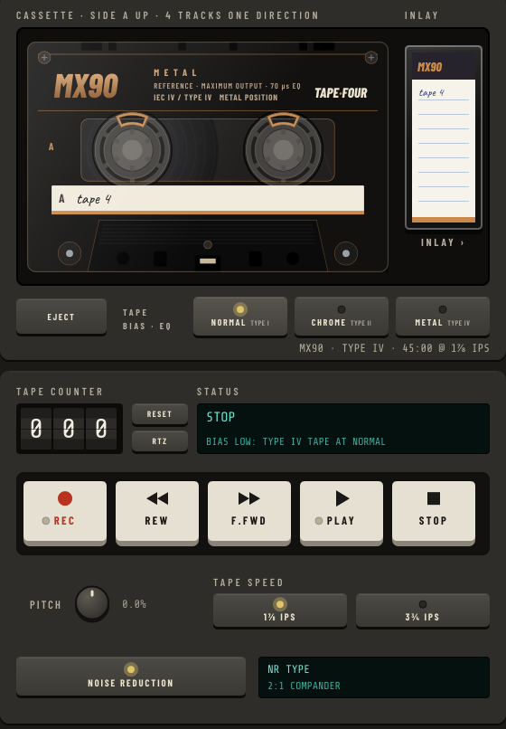
A Type II tape needs about 1.5 times the bias of a Type I, and a Type IV about 2.5 times.
These effects are recorded into the tape. The table assumes you play the tape back at the same position you recorded at.
| Tape ↓ · switch → | NORMAL | CHROME | METAL |
|---|---|---|---|
| Type I: BASIC, SD | Correct. | Over-biased by 3.5 dB. About −7 dB at 10 kHz, −0.9 dB overall, slightly cleaner (+0.9 dB MOL). Muffled. | Over-biased by 8 dB. About −16 dB at 10 kHz and −2 dB overall. Very dull, like a worn head. |
| Type II: XR | Under-biased by 3.5 dB. About +2.6 dB at 10 kHz, MOL −5.3 dB, grain +4 dB. Bright and edgy; distorts early. | Correct. | Over-biased by 4.5 dB. About −9 dB at 10 kHz and −1.1 dB overall. Dull. |
| Type IV: MX | Under-biased by 8 dB. MOL −12 dB, grain +10 dB, −2.5 dB overall, treble about −1 dB. Heavily distorted and gritty. Old recordings bleed through (see below). | Under-biased by 4.5 dB. About +2.5 dB at 10 kHz, MOL −6.8 dB, grain +5 dB. Bright and crunchy. | Correct. |
NORMAL plays back with 120 µs EQ, while CHROME and METAL both use 70 µs. Each stretch of tape is played back through the EQ of the switch as it is now, compared with the EQ it was recorded with:
| Recorded at | Played at | Result |
|---|---|---|
| CHROME or METAL (70 µs) | NORMAL (120 µs) | Treble lifted by a shelf starting near 1.3 kHz: about +4.5 dB at 8 kHz, up to +4.7 dB. Bright and hissy. |
| NORMAL (120 µs) | CHROME or METAL (70 µs) | The reverse: about −4.5 dB at 8 kHz. Muffled. |
| CHROME | METAL, or the other way round | No EQ change; both use 70 µs. |
Blank-tape hiss follows the same rule: a Type II or IV tape played at NORMAL hisses brighter. You can combine both effects. For example, record a chrome tape at NORMAL (under-biased and bright), then play it back at CHROME.
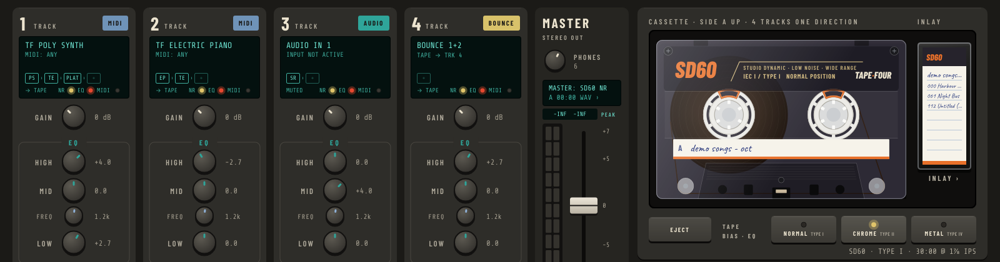
On a NORMAL setting the erase head isn't strong enough to fully erase high-coercivity metal tape. If you record over an MX tape at NORMAL, about 30 dB of the old recording survives underneath the new one, mostly its bass. Treble erases more easily. Record over it at METAL and the old recording is fully gone (it measures below −90 dB).
| Control | What it does | What to expect |
|---|---|---|
| PLAY Space | Plays the tape. | Unarmed tracks play the tape; armed tracks keep playing their live input, so you can rehearse over the tape. The PLAY lamp lights. |
| STOP Space | Stops. | One second later the tape is saved. |
| REC R | Records on every armed track. | The REC lamp lights. If no track is armed, the status display says ARM A TRACK FIRST. |
| REC while playing | Punch-in. | Recording starts at once on the armed tracks. Press PLAY to punch out and keep playing. Tape before and after the punch is untouched. The new take fades in and out over 6 ms either side, like the gap between a deck's erase and record heads, so a punch never clicks. |
| REW, F.FWD | Wind the tape. | The tape speeds up and slows down like real spools. Winding stops at either end of the tape. |
| RESET | Sets the counter to 000 where the tape is now. | Use it to mark the start of a song. |
| RTZ Home | Return to zero. | Rewinds and stops at 000. The status display reads RETURN TO ZERO. |
The counter is a three-digit mechanical-style counter. Like the counters on real decks, it doesn't count seconds: it advances one count for every two seconds of tape at 1⅞ ips. Write the counter number for each song on the inlay. The status display shows the time remaining at the current speed.
Click or right-click a track's display to open the track's patch card. The card shows what's plugged into the track, what plays it, and where its audio comes from. At the bottom, it previews what the track display will say. Click DONE, click outside the card or press Esc to close it. A track has exactly one source: plugging in a new one unplugs the old.
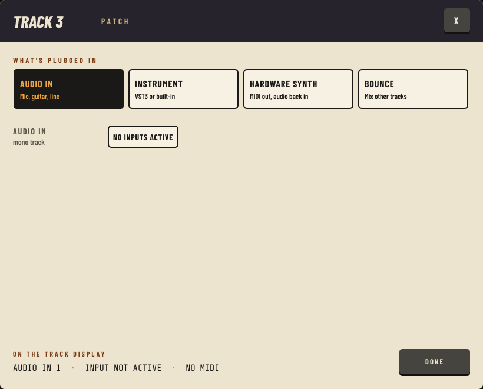
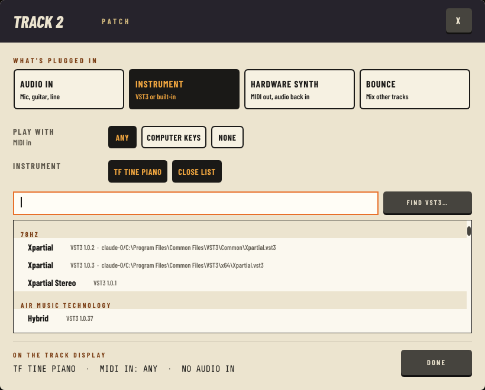
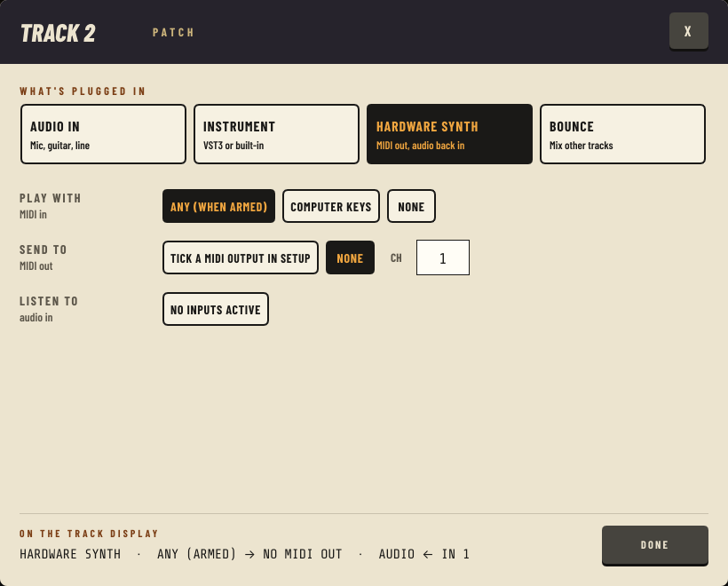
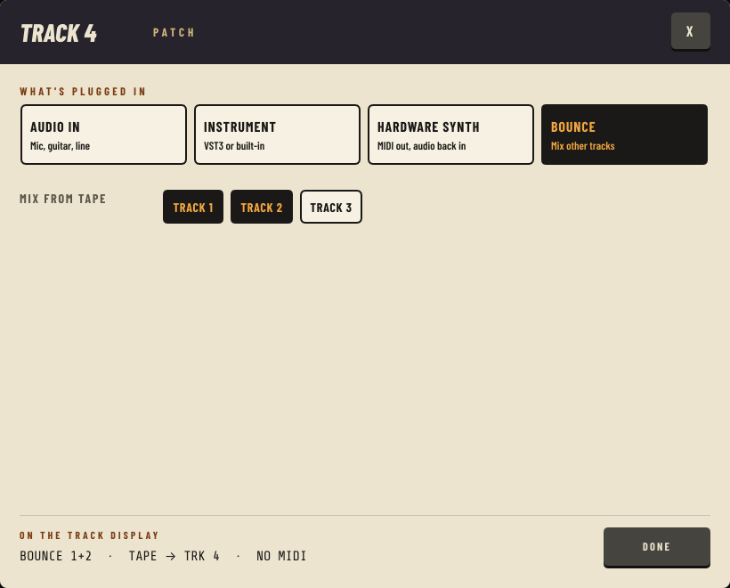
| Source | Settings | What to expect |
|---|---|---|
| Audio in | Audio in: IN n, or IN n+m mono. | The display shows AUDIO IN 1 and the input's name. Tracks are mono; a stereo source on a pair is summed to mono at half level per side. |
| Instrument | Play with: Any, a named controller, or None. Instrument: TF Poly Synth, TF Tine Piano, any scanned VST3, chosen from the list (Change…), Edit sound. | An instrument only sounds while its track is armed. Any: any ticked controller plays it. A named controller plays only that track, so different keyboards can play different armed tracks at once. Change… opens a searchable list of the built-in instruments and every scanned VST3, grouped by maker; type to filter and press Return for the first match. Two plug-ins with the same name are both listed, with their folder and file so you can tell them apart. Edit sound (or double-clicking the track display) opens the plug-in's own window to change its sound; the window stays on top, and Space, R and Home still work the transport while it has focus. Plug-ins come in 12 dB below their own output, so a full-level synth sits near 0 VU. |
| Hardware synth | Play with (as above) Send to: a MIDI output, and a channel 1–16, or 0 for "as played". Listen to: the input the synth is plugged into. | Notes go out to the synth on the chosen channel, and its audio is recorded from the input. An MPE controller's notes pass through on their own channels. Changing the route sends all-notes-off so nothing hangs. A track can't play a hardware synth and a plug-in at once. |
| Bounce | Mix from tape: tick the source tracks. | While recording, you hear the sources once, through their own EQ, pan and fader. Use those to balance the bounce, then arm the destination and record. The bounce picks up another pass of the tape: a little more hiss and grain, and a level shift of the tape's sensitivity. |
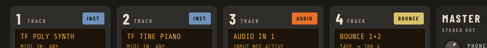
| Lamp | Lit | Red |
|---|---|---|
| NR | The tape under the head was recorded with noise reduction, or you're recording with NR on. | Flashes red while playing if the NR switch doesn't match how the tape was recorded. |
| EQ | Green: the tape here was recorded with the same playback EQ as the switch. | The switch's EQ differs from the recording's (chapter 6). It flashes while playing. |
| MIDI | Green flash: notes are reaching this track. | — |
When the tape under the head was recorded at a different speed from the one you're playing at, line 3 shows the pitch shift in semitones, for example -12.0 SEMITONES.
Each of the four channel strips has its controls in a single column, top to bottom. Double-click any knob or fader to reset it: gain to 0 dB, EQ and pan to centre, FREQ to 1.2 kHz, fader to the 0 mark.
| Control | Range | What to expect |
|---|---|---|
| GAIN | −20 to +40 dB (0 dB at the default) | Input trim before the tape. Use it to put peaks near 0 VU. Higher levels reach the tape's MOL and compress or distort (chapter 5). |
| HIGH | ±12 dB shelf: about ±11.6 dB at 10 kHz, ±7 dB at 5 kHz, half way at 4.5 kHz | Presence and air, well inside what the tape can record. Full boost is clearly brighter, and also brings up hiss. |
| MID | ±12 dB peak | Presence, honk or boxiness, depending on FREQ. A cut makes a part sit back. |
| FREQ | 250 Hz to 5 kHz (1.2 kHz at the centre) | Where MID works; the smaller knob with the blue pointer. Around 250–500 Hz for body or mud, 1–2 kHz for honk, 3–5 kHz for bite and vocal presence. Sweep it with MID boosted to find a spot, then cut or boost. |
| LOW | ±12 dB shelf: about ±11.6 dB at 100 Hz, ±6 dB at 250 Hz | Weight. A cut helps when bouncing several tracks together. |
| PAN | L100 to R100, constant power | Centre is −3 dB to each side. Hard left puts the full level on the left output only. |
| Fader | −∞ to +7 dB (0 at the mark) | The level into the mix and into bounces. On an armed track it also sets the level going to tape, as on a portastudio. |
| Meter | 20 LEDs, 0 VU at −12 dBFS | Green below 0 VU, amber from 0 to +3, red above +3. Keep peaks around 0 VU for a clean recording, and push into the amber for tape colour. |
| REC ARM | On or off | An armed track plays its live input (audio in, instrument or hardware synth) instead of its tape, whatever the transport is doing, and the display reads ARMED: LIVE INPUT. Press RECORD on the transport and it records that input to tape. To hear a take, disarm the track: while it is armed you hear the input, not the tape. |
The master strip has a stereo meter, the master fader for the stereo out, and the Phones knob, which sets the level of the phones output pair independently.
On a cassette 4-track the channel strip sits between the input and the tape. TAPE·FOUR works the same way: gain, EQ and the fader shape what is recorded on an armed track. On playback, the same strip shapes what you hear from the tape. To fix a recording later, adjust the strip on playback, or bounce it through the strip onto another track.
| Setting | What it does | What to expect |
|---|---|---|
| 1⅞ ips | Normal cassette speed. | The tape's full length. Treble saturates sooner and there's slightly more hiss. |
| 3¾ ips | Double speed, as on many 4-track portastudios. | Half the recording time. About an octave more treble headroom (the treble limit moves up), and about 3 dB less hiss in the audible range. |
| Playing at the other speed | Every stretch of tape remembers the speed it was recorded at. | A recording made at 3¾ and played at 1⅞ sounds an octave lower at half speed, and the reverse sounds an octave higher. The track display shows the shift in semitones. Record at 1⅞ and play at 3¾ for chipmunk vocals; do the reverse for slow, dark textures. |
| PITCH | Varispeed, ±5 steps of 2.4% (up to ±12%). | Speeds up or slows down the tape and changes pitch and tempo together, by about 0.4 semitone per step. Use it to tune the tape to an instrument, or to record a part slowed down and play it back at normal speed. |
Wow, flutter and drift (chapter 12) are added on top of the pitch setting, so the tape always moves slightly unevenly unless you turn them off.
Noise reduction encodes what you record and decodes on playback. On the way to tape it boosts quiet sounds, mostly the treble. On the way back it turns them down again, and the tape hiss goes down with them. Turn it on with the Noise reduction button. Choose the type by clicking the NR type display, or in Setup → Tape.
| Type | How it works | Hiss reduction | Character |
|---|---|---|---|
| 2:1 compander | Broadband 2:1 compression on record and 1:2 expansion on playback, with fixed treble pre-emphasis (dbx-style). | The most, roughly 30 dB | Very quiet. Can "pump": hiss and grain rise and fall behind loud bass notes. |
| Sliding band B | Lifts quiet treble up to 10 dB above about 1.5 kHz. | About 10 dB | Gentle and forgiving. |
| Sliding band C | A deeper band from about 700 Hz, up to 20 dB. | About 20 dB | Quieter than B, and more sensitive to level and treble errors. |
Tape remembers whether it was recorded with NR. If you play it back with the switch the other way, the track's NR lamp flashes red. Encoded tape played without NR sounds bright and squashed, and the treble pumps. Plain tape played with NR sounds dull and lifeless.
Noise reduction expects the tape to give back exactly what the encoder put on it. Anything that changes level or treble on the way through gets enlarged by the decoder, not just passed along. In TAPE·FOUR the encoder sits before the tape model and the decoder after it, so all of this happens on its own:
Setup → Tape shows the loaded cassette's measured figures. Its sliders adjust the deck and the tape's condition on top of those figures. Double-click Hiss or Tape drive to return it to the centre.
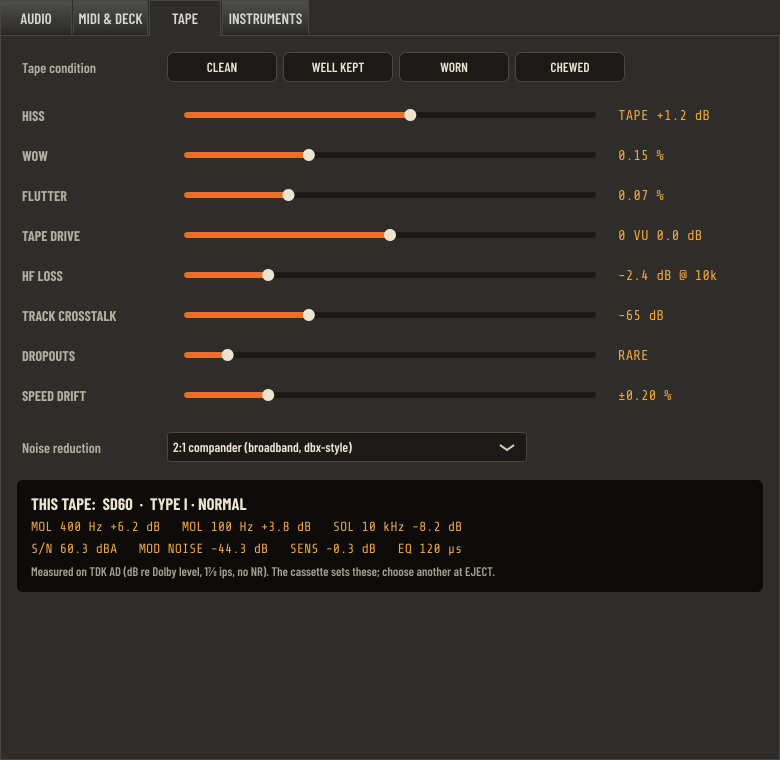
| Control | Range | What to expect |
|---|---|---|
| Hiss | Off, or −12 to +12 dB relative to the tape's measured hiss (centre = as measured) | Real cassettes without NR hiss at 54–63 dB below 0 VU. That is audible in quiet passages but not intrusive. Turn it up to taste for a dirtier tape, or off for a silent background. |
| Wow | 0–0.5% | A slow pitch waver (under 1.5 Hz). It's most audible on sustained notes and piano. |
| Flutter | 0–0.3% | A fast waver (6–12 Hz). It gives a slight shimmer, and above 0.15% a watery roughness. |
| Tape drive | −6 to +6 dB (centre = 0 VU at Dolby level) | Where 0 VU lands on the tape. More drive brings saturation and treble compression earlier, the way a deck calibrated hot would. Less drive keeps it cleaner. The playback level isn't changed. |
| HF loss | 0 to −12 dB at 10 kHz | A worn or misaligned head. It dulls everything played back, hiss included. |
| Track crosstalk | Off, or −80 to −30 dB | Neighbouring tracks leak into each other. You may hear it as a faint ghost of track 2 behind track 1. |
| Dropouts | None to frequent | Brief dips in level, from 15 to 75 ms, as a damaged patch of tape passes the head. |
| Speed drift | 0 to ±1% | The tape speed wanders slowly, every few seconds, as with tired motor belts. |
| Noise reduction | 2:1, B or C | See chapter 11. |
The presets set every slider except Tape drive, which is calibration rather than wear.
| Preset | Hiss | Wow | Flutter | HF loss | Crosstalk | Dropouts | Drift |
|---|---|---|---|---|---|---|---|
| Clean | off | 0 | 0 | 0 dB | off | none | 0 |
| Well kept | +1.2 dB | 0.15% | 0.08% | −2.4 dB | −65 dB | rare | ±0.2% |
| Worn | +6 dB | 0.30% | 0.15% | −6.6 dB | −55 dB | occasional | ±0.4% |
| Chewed | +9.6 dB | 0.45% | 0.24% | −9.6 dB | −45 dB | frequent | ±0.7% |
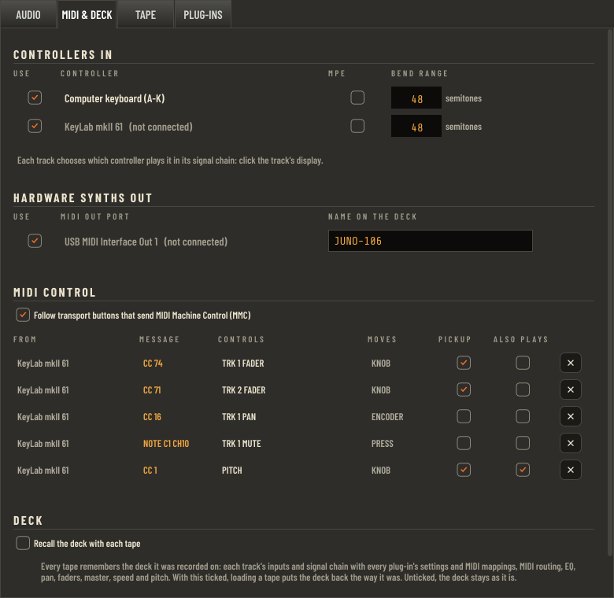
TAPE·FOUR notices MIDI devices being plugged in and out while it runs. Controllers and synth outputs you have ticked reconnect on their own, and tracks routed to them carry on. A controller TAPE·FOUR has never seen comes in switched on; untick it in Setup if you don't want it.
Tick the MIDI outputs your synths are on. You can give each one a name, such as "JUNO-106", which the track display then shows instead of the port name. The MIDI OUT lamp at the top of the deck flashes when notes go out.
Every tape remembers the deck it was last used with:
With Recall the deck with each tape ticked, loading a tape puts the deck back exactly as it was. Unticked (the default), the deck stays as it is when you change tapes. The tape switch always moves to the new tape's type either way.
| Key | Action |
|---|---|
| Space | Play / stop |
| R | Record (punch in while playing) |
| Home | Return to zero |
| Esc | Close the patch card or inlay |
| A … ; | Play notes; Z / X change octave |
| Tapes | Documents/TapeFour/Tape Shelf/: one folder per tape, holding the audio for each track, tape.xml (label, inlay and what's recorded where) and deck.xml (the deck that goes with the tape). Tapes are saved in the background: every five seconds while recording, so a crash costs seconds rather than a take; a second after the transport stops; and on eject and quit. |
| Settings | TapeFour.settings: audio device, MIDI, deck and tape character. In %APPDATA%\TapeFour on Windows, ~/Library/Application Support/TapeFour on a Mac, ~/.config/TapeFour on Linux. Only written when something has changed. |
| Crash reports | Crashes, next to the settings. If TapeFour ever crashes it writes a report there (the version and a stack trace, and on Windows a .dmp file) and says so when it next starts. |
| Problem | Try this |
|---|---|
| NO AUDIO DEVICE | Open Setup → Audio and choose your device. If another program holds it (common with ASIO and exclusive-mode WASAPI), close that program, then reselect the device. On a Mac, check TapeFour is allowed the microphone in System Settings → Privacy & Security. |
| REC does nothing | Arm at least one track. The status display says ARM A TRACK FIRST. |
| A take seems to have recorded silence | While a track is armed you hear its live input, not the tape. Disarm it and play the take back. |
| An instrument doesn't play | Tick the controller in Setup → MIDI & Deck. Check the track's Play with setting, and arm the track: instruments only sound while armed. Watch the MIDI IN lamp and the track's MIDI lamp. |
| Recordings sound distorted | Lower GAIN so peaks sit around 0 VU, use a tape with more headroom (MX), centre Tape drive, and check the tape switch matches the tape. |
| Everything sounds dull | Check the EQ lamps (playback EQ mismatch), the NR lamps (NR mismatch), the tape switch (over-bias) and HF loss in Setup → Tape. |
| Bounces get quieter or louder | That's the tape's sensitivity, doubled with 2:1 NR. Correct it with the faders before each bounce. |
| A plug-in shows as failed after a scan | It crashed or hung while being scanned, so TAPE·FOUR set it aside. Update the plug-in, select it in Setup → Instruments, choose Options… → Remove selected plug-in from list, and scan again. |
| A controller plugged in later doesn't play | Check it's ticked in Setup → MIDI & Deck, and that the track's Play with names it or is set to Any, and that the track is armed. |
| A plug-in is missing when a tape is recalled | Rescan in Setup → Instruments. The plug-in's settings are kept until it can be loaded again. |
| LAST SESSION CRASHED | The report is in the Crashes folder (see above). The tape was saved up to five seconds before the crash. |
| A ghost of an old take is audible | You recorded over a metal tape at NORMAL. Record over it again at METAL to erase it fully. |
| Cassette | Type | Measured on | MOL 400 | MOL 100 | SOL 10k | S/N (A) | Mod. noise | Sens. | EQ |
|---|---|---|---|---|---|---|---|---|---|
| BASIC | I | Sony HF | +2.4 | +2.0 | −10.3 | 54.3 | −36.1 | −1.0 | 120 µs |
| SD | I | TDK AD | +6.2 | +3.8 | −8.2 | 60.3 | −44.3 | −0.3 | 120 µs |
| XR | II | TDK SA | +4.4 | +3.4 | −11.2 | 60.9 | −47.2 | +1.1 | 70 µs |
| MX | IV | Maxell MX | +9.1 | +8.0 | −6.8 | 62.7 | −50.4 | +0.8 | 70 µs |
dB relative to 400 Hz Dolby level (0 VU), at 1⅞ ips, without noise reduction. TAPE·FOUR's automated tests record tones through each cassette and check that these figures come out within about 1 dB, and that the tape switch's EQ and bias effects match chapter 6.
TAPE·FOUR is free software under the GNU GPL v3. Fonts: Barlow Condensed, Share Tech Mono and Caveat (SIL Open Font License); Inter (SIL Open Font License). Cassette names and designs in TAPE·FOUR are its own. The real tapes named above are referenced only as the source of the measurements.